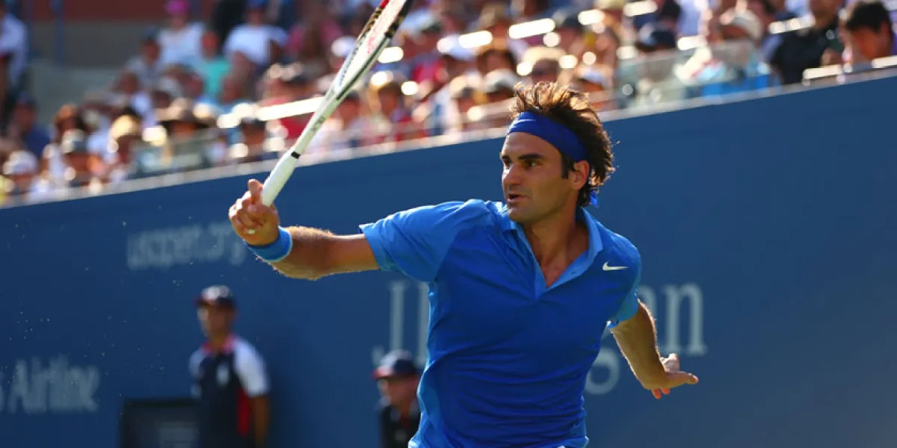

Jeux vidéos
J'aime me détendre en jouant à des jeux vidéos après une longue journée.

Tennis
Le tennis est un sport qui me permet de rester en forme et de me vider l'esprit.

Piano
La musique est une passion qui m'accompagne depuis longtemps et que j'adore pratiquer.